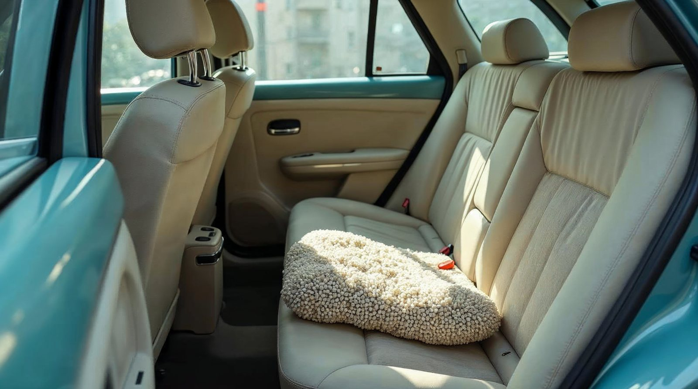
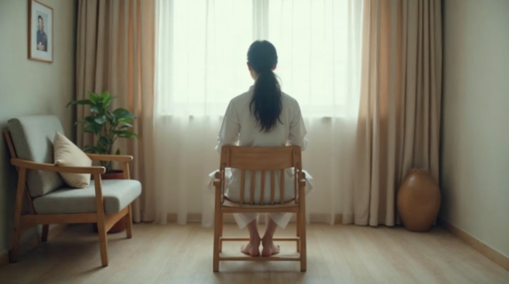
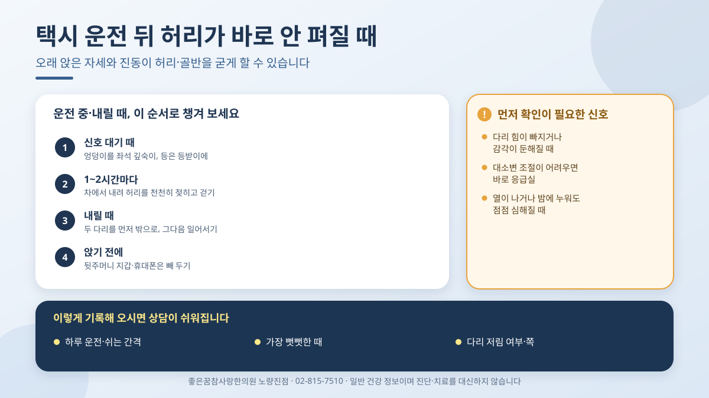

이종호 한의사 감수좋은꿈참사랑한의원 대표원장 (한의사 면허번호 19769)발행 2026-11-24 · 수정 2026-11-24
이 글의 차례
1~2시간마다 차에서 내려 허리를 천천히 펴고 몇 걸음 걷는 것만으로 내릴 때의 뻣뻣함이 덜하다는 기사분이 많습니다. 동작구와 노량진 일대를 하루 종일 도는 택시 기사분들께서는 손님을 내려 드리고 차에서 내리면 허리를 한참 구부정하게 있다가 겨우 편다고 하시고, 근무 시간 동안 화장실 갈 때 말고는 내릴 틈이 없다는 분도 있습니다.
다리에 힘이 빠지거나 대소변 조절이 어렵다면 바로 응급실을 찾으세요.
왜 이런 불편이 생길 수 있나요
- 오래 같은 자세로 앉아 있으면 허리와 골반 주변 근육이 굳어 일어설 때 바로 펴지지 않을 수 있습니다.
- 엉덩이를 앞으로 빼고 등을 둥글게 기대 앉으면 허리 아래쪽에 부담이 몰리기 쉽습니다.
- 차의 진동과 정차·출발을 반복하며 몸을 버티는 일도 허리를 피곤하게 합니다.
- 뒷주머니의 지갑은 골반을 한쪽으로 기울게 해 허리 한쪽의 긴장을 키우기도 합니다.

먼저 이렇게 여쭙니다
- 하루에 운전하는 시간은 얼마나 되고, 중간에 차에서 내려 쉬는 간격은 어느 정도인가요?
- 허리가 뻣뻣한 것 말고 엉덩이나 다리로 저리거나 당기는 느낌이 있나요?
- 좌석 등받이 각도와 허리 받침은 어떻게 쓰고 계신가요?
- 아침 첫 운전 때와 근무가 끝날 무렵 가운데 언제 더 불편한가요?

일상에서 먼저 해 볼 수 있는 것
- 신호 대기 때 엉덩이를 좌석 깊숙이 넣고 등을 등받이에 붙이기
- 1~2시간마다 차에서 내려 허리를 천천히 뒤로 젖히고 잠깐 걷기
- 내릴 때는 몸을 한 번에 비틀지 말고 두 다리를 먼저 밖으로 내린 뒤 일어나기
- 지갑이나 휴대폰을 뒷주머니에 넣고 앉지 않기

한의원에서 함께 살필 수 있는 경우
- 내릴 때마다 허리가 뻣뻣하고 오래 이어지는 경우 허리와 골반, 앉는 자세를 함께 살핍니다.
- 엉덩이나 다리 쪽으로 당기거나 저린 경우 어느 동작에서 심해지는지 넓게 살핍니다.
- 운전 시간이 길어 식사와 잠이 불규칙한 경우 생활 리듬을 함께 살핍니다.
좋은꿈참사랑한의원에서는 먼저 어떤 동작에서 아픈지 충분히 듣고, 필요하다고 판단될 때 초음파로 아픈 부위를 확인한 뒤 상태에 맞춰 침·약침·추나·온열 등을 정합니다. 귀가 전에는 집에서 지켜볼 점과 다음 진료 때 다시 확인할 동작을 알려 드립니다.
이렇게 기록해 오시면 상담이 쉬워집니다
- 하루 운전 시간과 차에서 내려 쉬는 간격
- 허리가 가장 뻣뻣한 때(첫 운전, 근무 끝, 다음 날 아침)
- 엉덩이나 다리 저림·당김이 있는지, 어느 쪽인지
- 좌석 등받이 각도와 허리 받침 사용 여부
이런 증상은 먼저 확인이 필요합니다
- 다리에 힘이 빠지거나 감각이 둔해지는 경우
- 대소변 조절이 어렵거나 사타구니 감각이 둔한 경우(바로 응급실)
이런 신호가 있으면 한의원보다 가까운 병원이나 응급실을 먼저 찾으세요.

여쭙는 것
- 하루에 운전하는 시간은 얼마나 되고, 중간에 차에서 내려 쉬는 간격은 어느 정도인가요?
- 허리가 뻣뻣한 것 말고 엉덩이나 다리로 저리거나 당기는 느낌이 있나요?
- 좌석 등받이 각도와 허리 받침은 어떻게 쓰고 계신가요?
생활에서 해 볼 것
- 신호 대기 때 엉덩이를 좌석 깊숙이 넣고 등을 등받이에 붙이기
- 1~2시간마다 차에서 내려 허리를 천천히 뒤로 젖히고 잠깐 걷기
- 내릴 때는 몸을 한 번에 비틀지 말고 두 다리를 먼저 밖으로 내린 뒤 일어나기
한의원에서 함께 살필 것
- 내릴 때마다 허리가 뻣뻣하고 오래 이어지는 경우 허리와 골반, 앉는 자세를 함께 살…
- 엉덩이나 다리 쪽으로 당기거나 저린 경우 어느 동작에서 심해지는지 넓게 살핍니다.
- 운전 시간이 길어 식사와 잠이 불규칙한 경우 생활 리듬을 함께 살핍니다.
먼저 확인이 필요한 신호
- 다리에 힘이 빠지거나 감각이 둔해지는 경우
- 대소변 조절이 어렵거나 사타구니 감각이 둔한 경우(바로 응급실)
한눈에 보는 표
| 구분 | 핵심 |
|---|---|
| 여쭙는 것 | 하루에 운전하는 시간은 얼마나 되고, 중간에 차에서 내려 쉬는 간격은 어느 정도인가요? 허리가 뻣뻣한 것 말고 엉덩이나 다리로 저리거나 당기는 느낌이 있나요? |
| 생활에서 해 볼 것 | 신호 대기 때 엉덩이를 좌석 깊숙이 넣고 등을 등받이에 붙이기 1~2시간마다 차에서 내려 허리를 천천히 뒤로 젖히고 잠깐 걷기 |
| 한의원에서 함께 살필 것 | 내릴 때마다 허리가 뻣뻣하고 오래 이어지는 경우 허리와 골반, 앉는 자세를 함께 살핍니다. 엉덩이나 다리 쪽으로 당기거나 저린 경우 어느 동작에서 심해지는지 넓게 살핍니다. |
| 먼저 확인이 필요한 신호 | 다리에 힘이 빠지거나 감각이 둔해지는 경우 대소변 조절이 어렵거나 사타구니 감각이 둔한 경우(바로 응급실) |
자주 묻는 질문
허리 보호대를 계속 차고 운전해도 되나요?
잠깐 편하다는 분도 있지만 오래 차고만 있으면 스스로 버티는 힘을 덜 쓰게 될 수 있어, 착용 시간을 진료 때 함께 정해 봅니다.
일을 쉬지 못하는데 진료를 받아도 되나요?
운전 일정에 맞춰 할 수 있는 방법부터 함께 정리합니다. 평일은 저녁 8시까지, 주말·공휴일에도 오후 3시까지 진료합니다.
허리 받침 쿠션은 어떤 것이 좋을까요?
허리 뒤 오목한 곳을 가볍게 받쳐 주는 얇은 것부터 써 보세요. 너무 두꺼우면 몸이 앞으로 밀릴 수 있습니다.
진료 시간은 어떻게 되나요?
좋은꿈참사랑한의원은 평일 09:30~20:00(점심 13:00~14:00), 토·일·공휴일 09:30~15:00에 진료합니다.
좋은꿈참사랑한의원은 재진 때 지난번 이야기부터 이어서 여쭙니다. 진료시간과 예약은 오시는 길에서 확인하세요.
어디서 상담받을 수 있나요?
좋은꿈참사랑한의원은 서울 동작구 만양로2길 2 신성빌딩 3층·5층(서울 동작구 상도동, 7호선 상도역 3번 출구 근처)에 있습니다. 한의사 3명(이종호 대표원장, 조영기 수석진료원장, 정원영 진료원장)이 진료합니다. 진료시간은 평일 09:30~20:00(점심 13:00~14:00), 토·일·공휴일 09:30~15:00이며, 방문 전 전화로 확인을 권합니다. 예약은 네이버 예약, 카카오톡 상담, 전화 02-815-7510로 받습니다.
이 글은 일반적인 건강 정보이며 개인의 진단이나 치료를 대신하지 않습니다. 증상이 있거나 복용 중인 약이 있다면 진료를 통해 확인하세요. 치료 효과는 개인마다 다를 수 있습니다.
작성 기준: 일반적으로 알려져 있는 건강 정보를 참고해 정리했습니다(대표원장 감수). 증상 기록은 1~2주 동안 하루 1회, 비슷한 시간에 적어 오시면 지난 상태와 비교하기 쉽습니다.